AbsoluteTime提速技巧
@2015-02-26
之前在一个统计报表产出的项目中涉及到日志数据的处理及时间戳的转换，一开始代码并没有优化，产生一次报表要1小时，后来在优化代码时发现原来大部分时间都消耗在了时间戳转换相关，如AbsoluteTime。
使用最简单的方式，转换100000个时间戳，当然不怎么慢，但是如果Binomial[10000,2]呢。。。
I have a job concerning the conversion of timestamp, and I found AbsoluteTime is too slow.
For example, in a sample data scale [2MB], 130000 lines of the DateString.
ParallelMap speed up by 3times.
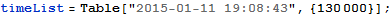
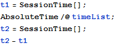
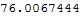
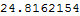
核心数量
当核心数量大于6时，速度提升并不明显。
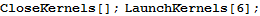

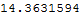
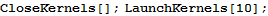
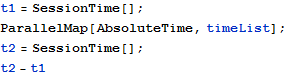
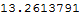
使用技巧
提升10倍速度
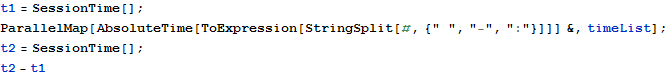
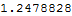
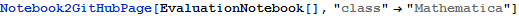